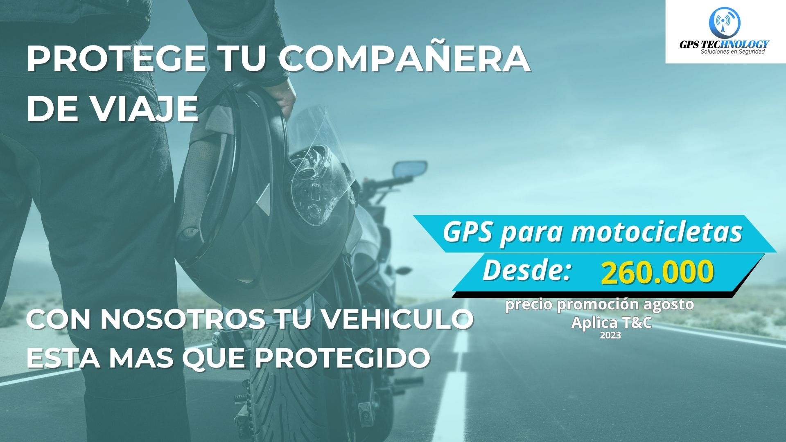
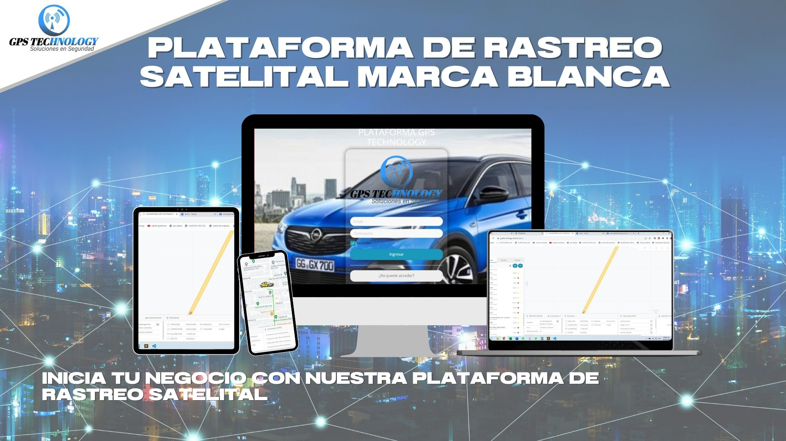
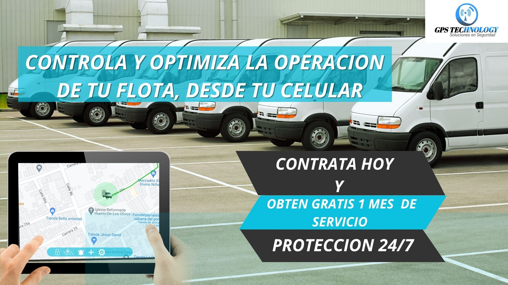

Control y Seguridad las 24 horas del dia.


Plataforma Satelital

Control y Seguridad las 24 horas del dia.

Ofrecemos rastreo satelital de alta precisión para vehículos, activos y personas. Mantén un control total en tiempo real.

Garantizamos comunicaciones seguras y confiables en cualquier parte del mundo con tu vehiculo.

Monitorea la viviendad en tiempo real desde el celular y Recibe alertas instantáneas sobre cualquier evento importante, desde movimientos no autorizados hasta condiciones peligrosas.

Personalizamos soluciones de seguridad satelital para empresas en entornos remotos o de alto riesgo. Protege tus activos y empleados.

Proporcionamos seguridad y tranquilidad a viajeros aventureros en lugares remotos. Disfruta de tus aventuras con confianza.

Protegemos a tu familia con servicios de seguimiento y alertas en tiempo real. Mantén a tus seres queridos a salvo en todo momento.
Gps technology, es una empresa líder en seguridad satelital que se dedica a proteger lo que más importa. Nuestra misión es proporcionar soluciones de seguridad avanzadas y confiables utilizando la tecnología satelital más avanzada.
Con años de experiencia en el campo, hemos ayudado a empresas, viajeros y familias a mantenerse seguros en cualquier parte del mundo. Nuestro equipo de expertos en seguridad está comprometido con tu tranquilidad y protección.
Monitoreo en tiempo real de flotas de vehículos con alertas y notificaciones en caso de desviaciones no autorizadas.
Proporcionamos seguridad satelital en eventos y situaciones críticas, garantizando una respuesta rápida y eficaz.
Ofrecemos soluciones de seguimiento y localización para personas, ideal para viajeros y trabajadores en solitario.
Disfruta de nuestros servicios en cualquier lugar.
Los sistemas de seguridad satelital utilizan tecnología de satélites para rastrear, comunicarse y proporcionar alertas en tiempo real. Esto permite el monitoreo y la protección de activos, personas o vehículos en áreas remotas o sin cobertura de red.
La seguridad satelital ofrece ventajas como la cobertura global, la capacidad de seguimiento en tiempo real, la comunicación en áreas remotas y la capacidad de respuesta rápida en situaciones de emergencia.
Puedes obtener servicios de seguridad satelital contactando a una empresa especializada como Gps technology. Ofrecemos soluciones personalizadas para empresas, viajeros y familias. ¡Contáctanos para obtener más información!.
Descubre cómo la seguridad satelital puede brindarte tranquilidad en tus aventuras y viajes a lugares remotos.
Leer Más
Explora cómo la seguridad satelital puede mejorar la gestión y protección de tu flota de vehículos empresariales.
Leer Más
Descubre las razones por las que la seguridad satelital es una elección inteligente para proteger a tu familia en cualquier lugar.
Leer Más


"Gps technology ha sido un socio confiable para proteger nuestra flota de vehículos en áreas remotas. Su tecnología satelital es impresionante y su equipo es altamente profesional."
John Doe, CEO de XYZ Company
"Estoy encantado con los servicios de Gps technology. Me siento mucho más seguro cuando viajo a lugares remotos gracias a su tecnología de seguimiento satelital."
Jane Smith, Viajera Aventurera
"Gps technology ha mejorado significativamente nuestra seguridad en eventos masivos. Su respuesta rápida y sus sistemas avanzados son invaluables."
Mary Johnson, Coordinadora de Eventos